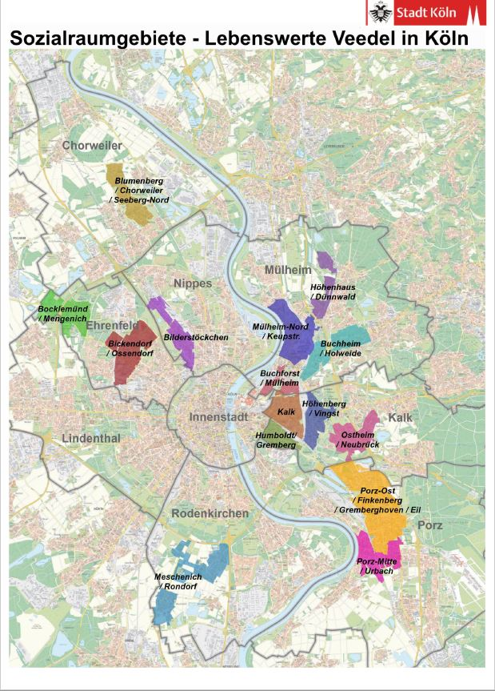
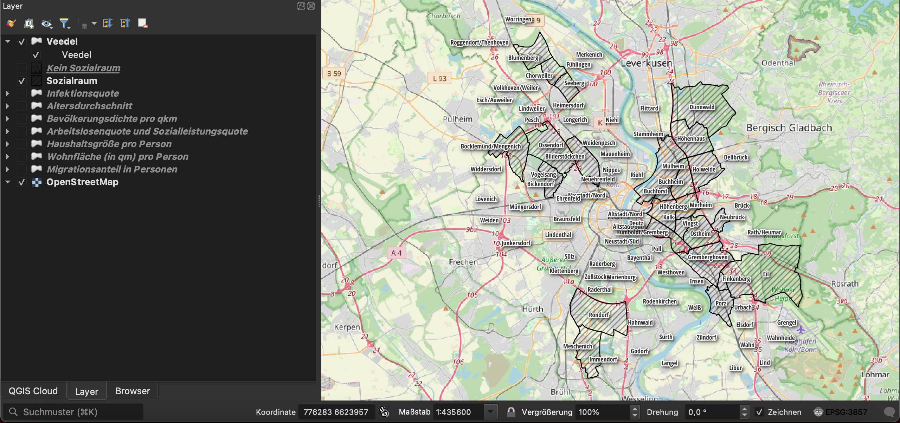
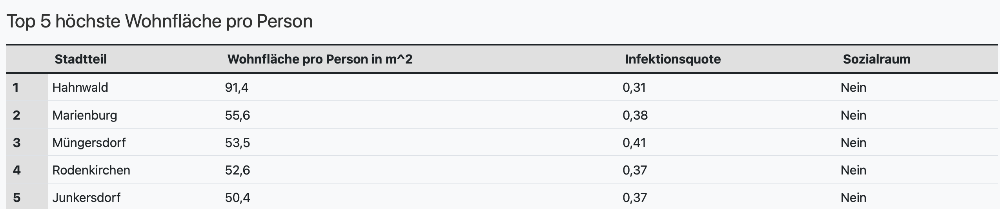
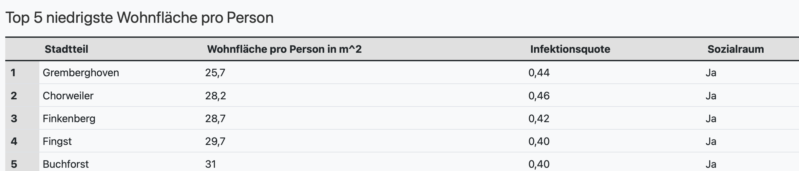
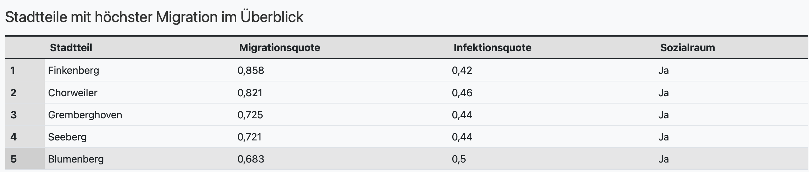
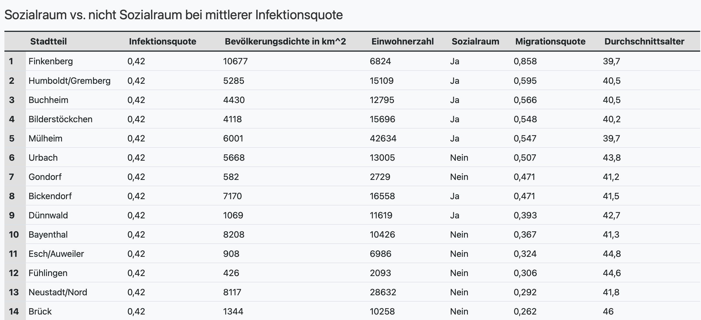
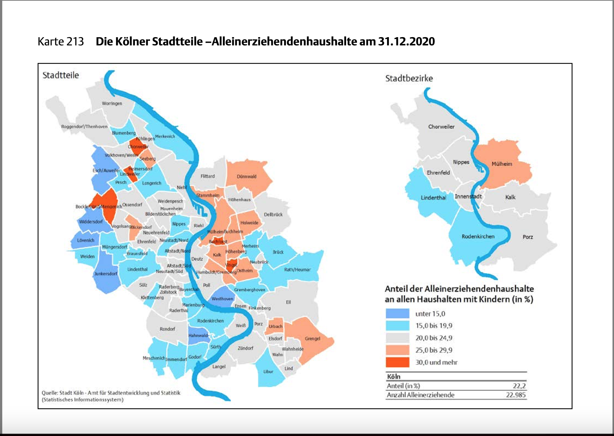
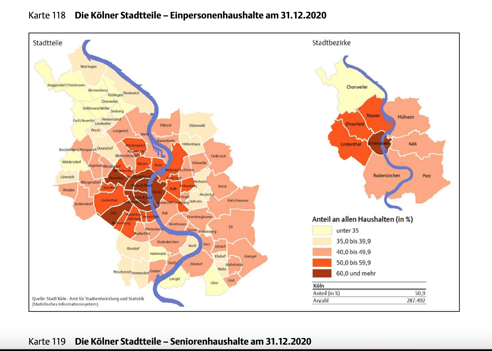
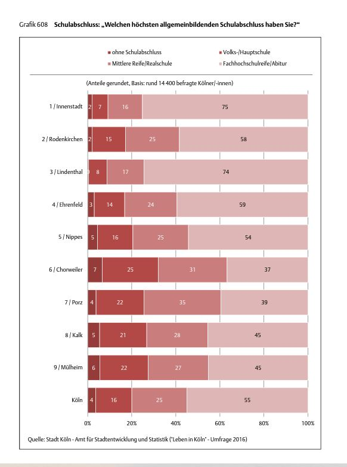

Einleitung
COVID-19, die Krankheit, die durch das neuartige Coronavirus verursacht wird, hat einen globalen Einfluss auf das Leben der Menschheit genommen. Die Maßnahmen zur Eindämmung der Pandemie, wie z.B. soziale Distanzierung und Reisebeschränkungen, haben zu einer Veränderung des täglichen Lebens und der Interaktionen in Gemeinschaften geführt. Auch die Wirtschaft hat gelitten, insbesondere kleine Unternehmen und Menschen mit niedrigem Einkommen sind stärker betroffen. Darüber hinaus kann die Isolation und der Verlust von sozialen Kontakten zu psychischen Problemen geführt haben.
Hiermit ergibt sich das berechtigte Forschungsinteresse, herauszufinden, welche Faktoren dazu führen können, dass bestimmte Bevölkerungsgruppen eher an COVID-19 erkranken als andere.
Studien zeigen, dass Menschen aus niedrigeren Sozialräumen häufiger von den Auswirkungen der COVID-19 Pandemie betroffen sind. Dies kann auf verschiedene Faktoren zurückzuführen sein, wie z.B.:
- Arbeitsbedingungen: Menschen mit geringerem Einkommen sind häufiger in Berufen tätig, die sie in direkten Kontakt mit anderen Menschen bringen, was das Risiko einer Ansteckung erhöht. Außerdem haben viele von ihnen keine Option, von zu Hause aus zu arbeiten, was ihre Exposition erhöht.
- Wohnbedingungen: Menschen aus niedrigeren Sozialräumen leben oft in engen Wohnverhältnissen, was es schwieriger macht, gerade in Hochzeiten der Pandemie, soziale Distanzierung zu praktizieren.
- Bildung: Ein höheres Bildungsniveau kann mit besseren Informations- und Gesundheitsressourcen verbunden sein, was dazu beiträgt eine gewisse Jobsicherheit zu erhalten und darüber hinaus Zugang zu höher qualifizierten Jobs. Diese wiederum bieten höhere Vergütung, welche es erlaubt sich größeren Wohnraum leisten zu können, gesünder Lebensweisen zu praktizieren und z.B. im Krankheitsfall Medikamente einfacher finanzierbar sind.
- Eine höhere Migrationsrate kann bedeuten, dass ein Stadtteil eine höhere Dichte an Menschen aus unterschiedlichen Kulturkreisen hat, die unterschiedliche Überzeugungen und Praktiken in Bezug auf Gesundheit und Verhaltensänderungen aufgrund von COVID-19 haben können.
All diese Faktoren zeigen, dass Menschen aus Sozialräumen einer höheren Belastung ausgesetzt sind.
Sozialräume
Definition:
Ein Sozialraum wird im Konzept „Lebenswerte Veedel - Bürger- und Sozialraumorientierung in Köln“ definiert. Das 2006 ins Leben gerufene und 2010 durch den Rat beschlossene Konzept soll durch Projekte zu Themen wie Bildung, Sport, Kultur oder Gemeinwesen die Zusammenarbeit und Vernetzung zwischen Stadt, privaten Träger*innen und der Bevölkerung stärken. Im Jahr 2019 wurde die Anzahl der Sozialräume von 11 auf 15 erweitert und die Abgrenzungen leicht verändert.
Die Sozialräume in Köln sind:
- Bickendorf/Ossendorf
- Bilderstöckchen
- Chorweiler/Seeberg-Nord
- Bocklemünd/Mengenich
- Buchforst/Mülheim-Süd
- Buchheim/Holweide
- Höhenberg/Vingst
- Höhenhaus/Dünnwald
- Humboldt-Gremberg
- Kalk
- Meschenich/Rondorf
- Mülheim-Nord/Keupstraße
- Ostheim/Neubrück
- Porz-Mitte/Urbach
- Porz-Ost, Finkenberg, Gremberghoven und Eil

(Quelle: https://www.stadt-koeln.de/leben-in-koeln/soziales/lebenswerte-veedel)
Methodologie und Datenquellen
Sozialraum-Layer:
Um die Sozialräume in einem geeigneten Geoinformationssystem zu erfassen, haben wir uns dem Werkzeug QGIS bedient. QQIS ist eine freie Geoinformationssoftware, welche es ermöglicht Karten anzulegen und diese unter verschiedenen Gesichtspunkten zu analysieren.
Um die Karte von Köln darzustellen, benötigen wir zunächst die Daten einer geeigneten Karte. Hierfür wird ein OpenStreetMap Layer geladen - OpenStreetMap.org ist ein im Jahre 2004 gegründetes internationales Projekt mit dem Ziel, eine freie Weltkarte zu erschaffen. Somit haben wir schon einmal die Karte für Köln.
Als nächstes haben wir uns unter https://offenedaten-koeln.de/dataset/sozialräume-köln JSON-Daten der Sozialräume in Köln heruntergeladen. Damit haben wir erreicht, alle offiziell ausgewiesenen Sozialräume in Köln als einen Layer in unserer Karte abzugrenzen (diesen können Sie sich gerne im nächsten Abschnitt anzeigen lassen).

Corona-Fallzahlen:
Im nächsten Schritt haben wir über das Portal offenedate-koeln.de Daten zu Corona Infektionen verwendet, um Erkenntnisse über die Corona-Fallzahlen in den einzelnen Stadtteilen zu gewinnen.
Unter https://www.offenedaten-koeln.de/dataset/corona-fallzahlen-koeln können diese ebenfalls als JSON-Datei heruntergeladen werden. Unser Datensatz entspricht dem Stand vom 30.11.2022. Dabei sind die Erklärungen der Attribute von uns übernommen worden.
- anzahl_7t: Positiv Getestete in den letzten 7 Tagen
- anzahl_7t_100k: 7-Tage-Inzidenz
- anzahl_gesamt: Positiv Getestete gesamt
- anzahl_aktiv: Positiv Getestete in Quarantäne
- einwohner: Einwohnerzahl des Stadtteils
- stand: Stand der Daten
Als nächstes haben wir einige Daten aus den „Kölner Stadtteilinformationen 2021“ (https://www.stadt-koeln.de/mediaasset/content/pdf15/statistik-standardinformationen/kölner_stadtteilinformationen_zahlen_2021.pdf ) zusammengetragen, um weitere Layer zu erstellen, welche es ermöglichen einen Überblick über die Verteilungen folgender Kategorien zu gewinnen:
- Altersdurchschnitt
- Bevölkerungsdichte pro km^2
- Arbeitslosen- und Sozialleistungsquote
- Haushaltsgröße (Personen je Haushalt)
- Wohnfläche pro Person in m^2
- Migrationsanteil gemessen in Personen
Infektionsquote:
Außerdem haben wir uns per Feldrechner-Tool von QGIS eine Infektionsquote errechnet. Diese Bildet das Herzstück unserer Analyse, da sie Aufschluss über den Zusammenhang zwischen Infektionen und Einwohnerzahl einzelner „Veedel“ gibt.
Hierfür haben wir einfach die Corona-Fallzahlen-Daten verwendet. Wir haben die „anzahl_gesamt“ durch die „Einwohner“ der einzelnen Veedel geteilt, um eine Quote für jeden einzelenen Stadtteil zu errechnen.
Interaktive Karte
Hier können Sie sich die Ergebnisse unserer Analyse interaktiv anzeigen lassen. Im Menü oben rechts lassen sich einzelne Layer an- und ausschalten. Wenn Sie über die Icons der Layer hovern können Sie sich die Legende des Layers anzeigen lassen. Rechts lässt sich bei Zahnrad auch die Transparenz der Layer verändern. Da der Layer fremdgehostet wird bitten wir Sie eventuelle Ladezeiten zu entschuldigen.
Benutzerhinweis:
- Um das Geoinformationssystem am effektivsten zu nutzen, lassen Sie die ersten drei Layer “Veedel Name, “Sozialraum” und “kein Sozialraum” während Ihrer Nutzung stets eingeschaltet. Somit können Sie danach beliebig andere Kategorie Layer dazuschalten, um einen genauen Eindruck davon zu gewinnen, welche Stadtteile von den einzelnen Faktoren beeinflusst sind.
- Da die Layer aufeinander liegen, sollte immer nur ein Kategorie Layer (Altersdurchschnitt, Bevölkerungsdichte, Haushaltsgröße, Wohnfläche und Migration) gleichzeitig ausgewählt werden.
- Da die Quoten (Infektionsquote (grün), Arbeitslosenquote (rot) und Sozialleistungsquote (gelb)) als kleine Diagramme in den Veedeln dargestellt werden, können Sie diese gerne auch gleichzeitig eingeschaltet lassen.
Analyse und weitere Indizien
Aus den vorhandenen Daten haben wir für ausgewählte Kategorien einige Tabellen erstellt, welche veranschaulichen sollen, welche Gruppen besonders vulnerable gegenüber Corona Infektionen scheinen.
Tabellenauswertung
Tabelle 1 & 2
Hierfür wurde die Top 5 der „Veedel“ mit dem meisten Wohnraum, mit der Top 5 der „Veedel“ mit dem geringsten Wohnraum verglichen. Auffällig ist, dass die Top 5 mit dem geringsten Wohnraum alles Sozialräume sind und es ist anzumerken das hierbei die Infektionsquote stets bei kleiner 0,4 liegt – es zeichnet sich also eine Tendenz zu einer überdurchschnittlicheren Infektionsquote ab – was in Anbetracht des geringeren Wohnraums logisch erscheint.

Tabelle 3
Diese Tabelle listet die Top 5 „Veedel“ mit der höchsten Migrationsquote in Köln. Auch hier finden sich ausschließlich Sozialräume wieder und alle sind eindeutig überdurchschnittlich.
Tabelle 4
Diese Tabelle arbeitet mit dem Medianwert aller Infektionsquoten der bei unserer vorliegenden Analyse den Wert 0,42 beträgt. Dieser Wert ist genau in der Mitte aller Infektionsquoten und es gibt insgesamt 14 „Veedel“ die diesen Wert in der Infektionsquote verzeichnen. Jeweils die Hälfte davon ist ein Sozialraum oder eben auch nicht (7 Sozialräume, 7 Nicht-Sozialräume).
Interessanterweise haben die Sozialräume tendenziell eine höhere Einwohnerzahl bei geringerem Durchschnittsalter. Dies zeigt auch auf, dass die Einwohnerzahl immer mit einbezogen werden muss, wenn man einen Sozialraum mit einem Nicht-Sozialraum vergleicht.
Trotz gleicher Infektionsquote hat der soziale Brennpunkt „Bickendorf“ knapp 6000 Einwohner mehr als der Nicht-Sozialraum „Bayenthal“. Dies wird auch deutlich, wenn man den größten Nicht-Sozialraum in der Liste „Neustadt-Nord“, mit 28632 Einwohnern, im Vergleich mit Mülheim, dem größten Sozialraum der Liste (42634 Einwohner) gegenüberstellt. Denn Mülheim hat bei gleicher Quote rein rechnerisch knapp 5000 mehr positive getestete Menschen zum Stichtag des 30.11.2022 verzeichnet.
Dies sehen wir als klares Indiz dafür, das Menschen die in Sozialräumen Leben eine deutliche vulnerablere Gruppe darstellen und häufiger von Corona-Infektionen betroffen sind und waren, wie Menschen aus privilegierteren Gesellschaftsschichten.
Weitere Indizien und Quellen
Eine weitere Quelle die wir für den Abschluss dieser Arbeit nicht unberührt lassen möchten ist das Statistische Jahrbuch Köln aus dem Jahr 2020 (https://www.stadt-koeln.de/mediaasset/content/pdf15/statistik-jahrbuch/15_statistisches_jahrbuch_2020_bfrei.pdf)
Da die Daten jedoch nicht zugänglich sind konnten wir diese nicht in unser Geoinformationssystem aufnehmen – wir sind jedoch der Meinung, dass auch diese eine Erwähnung wert sind und möchten bestimmte Abbildungen referenzieren, um einige unserer Argumente zu validieren oder um weitere Faktoren zu ergänzen.
Alleinerziehende
Alleinerziehende haben es in den Zeiten der Pandemie deutlich schwerer. Ein Blick auf die statistische Karte aus dem Jahrbuch 2020 lässt ableiten, dass Alleinerziehende vorallem in Sozialräumen leben.
Für weitere Informationen zu diesem Thema empfehlen wir folgende Artikel:
Corona-Krise trifft Alleinerziehende besonders hart:
https://www.lvr.de/de/nav_main/derlvr/presse_1/pressemeldungen/press_report_270656.jsp
Alleinerziehende fühlen sich häufiger krank:
https://www.spiegel.de/gesundheit/schwangerschaft/alleinerziehende-sind-haeufiger-krank-a-1127102.html

Anzahl Einpersonenhaushalte
In den Hochzeiten der Pandemie war es wichtig auf genügend Abstand und gegebenfalls Isolation zu setzen. Im Lockdown durften viele Menschen nicht Ihre Wohnungen und Häuser verlassen. In unserem Geoinformationssystem lässt sich die Haushaltsgröße in Personen bereits gut im Bezug auf die einzelnen Veedel darstellen.
Einen weiteren Anhaltspunkt fanden wir in dieser Karte im statistischen Jahrbuch:

Es ist deutlich erkennbar, dass sich die meisten Einpersonenhaushalte in der Innenstadt und somit in gut betuchteren Lagen befinden. Dies lässt sich auch gut mit unserem Geoinformationssystem darstellen. Der Layer „Haushaltsgröße“ macht Angaben die sich mit diesen Daten der Stadt Köln decken.
Umgekehrt lässt sich daraus ableiten, dass vor allem in den Randbezirken – welche überdurchschnittlich oft Sozialräume sind – eine höhere Haushaltgröße zu vermuten ist, was das Risiko an COVID-19 zu erkranken erheblich erhöht.
Bildungsabschlüsse in Köln
Wie in der Einleitung erwähnt gehen sozioökonomische Faktoren wie Bildung und Gehalt Hand in Hand mit der individuellen Lebenssituation von Menschen. Diese Faktoren beeinflussen also maßgeblich, ob jemand es sich leisten kann in Sülz oder der Südstadt zu leben oder ob jemand doch nach Porz oder Ossendorf ziehen muss, da er sich die teuren Innenstadt Mieten nicht leisten kann.
Leider gab es zu den Themen Bildung und Gehalt für die einzelnen Veedel in Köln keine gute Datenlagen. Wir haben im statistischen Jahrbuch jedoch folgende Grafik über Schuldabschlüsse gefunden, welche sich zumindest auf die 9 Stadtbezirke in Köln bezieht. Erwähnenswert bleibt, dass es im Lindenthal laut dieser statistik keinen Personen ohne Schulabschluss zu geben scheint, während in den Bezirken, die eher mit Sozialräumen in Verbindung gebracht werden (Chorweiler, Kalk, Porz, Mülheim) die Abiturientenquote sehr viel geringer ausfällt als in den übrigen Bezirken. Wir verstehen dies als ein Indiz für die erhöhten Infektionsquoten in Sozialräumen, da geringer qualifizierte und gebildete Menschen tendenziell schlechter bezahlten Jobs nachgehen, weshalb die Vermutung nahe liegt, dass diese Menschen weniger oft freiwillig in den Sozialräumen leben.
